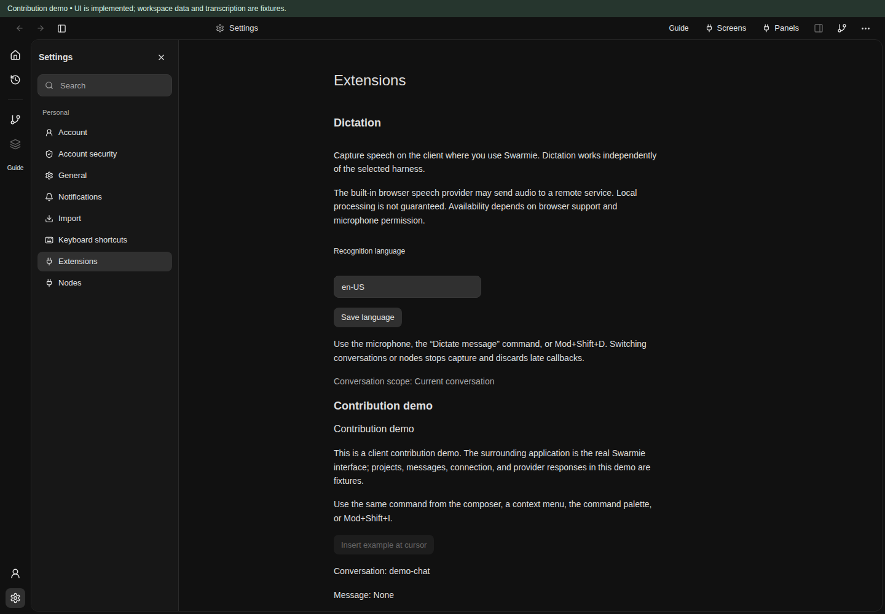
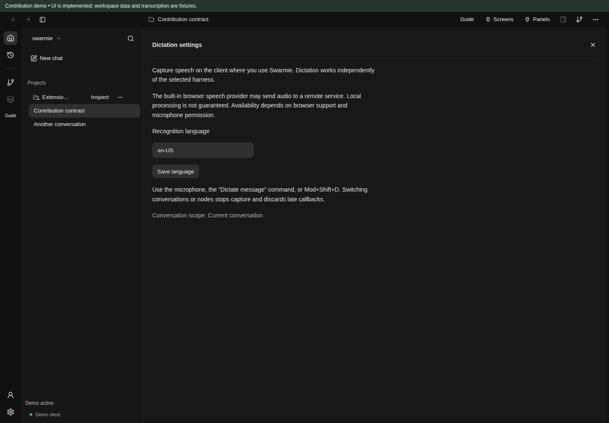
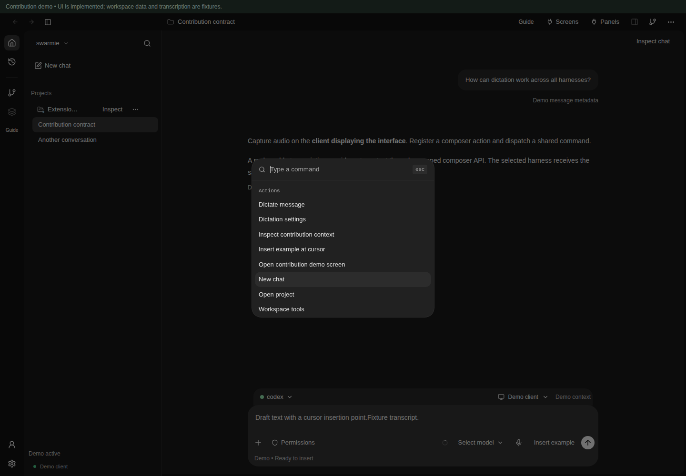

Where extensions live
An implemented, versioned contribution contract for Swarmie’s desktop workspace. Small contributions enter named slots; full screens and conversation panels have their own identities and lifecycles.
Version 1 · Desktop interface · Minimum width 760 px. Screenshots use the actual implemented application with fixture projects, messages and connection data. Demo dictation is simulated and captures no audio. Labels and green borders are linked documentation overlays.
The supported catalog
Every row below is mounted in the application. The original slot names are retained: sidebar.primary maps to the navigation rail, while conversation.header.actions sits inside the conversation, separately from the application titlebar. Select any highlighted region or index entry for its contract.
| Slot and purpose | Types | Supplied context | Example and availability |
|---|---|---|---|
sidebar.primaryPrimary navigation rail, between workspace tools and the account controls. | action | Active workspace; active conversation if selected. | Open a screen through one command.Always mounted; the rail remains available when the sidebar is hidden. |
sidebar.footerBottom of the projects and chats sidebar, above connection status. | action, text | Active workspace and conversation. | Show extension status or open a tool.Visible while the sidebar is open. |
app.header.actionsApplication titlebar, before extension screen/panel navigation and built-in tools. | action | Active workspace and conversation. | Open the contribution demo screen.Available across chat, settings, and extension screens. |
conversation.header.actionsTop-right of the conversation content, below the application titlebar. | action | The displayed conversation, project, worktree, and session. | Inspect the conversation in a panel.Mounted when the conversation is displayed; absent while a screen replaces it. |
composer.actionsComposer toolbar, between session controls and Send/Queue/Stop. | action | Displayed conversation, worktree and session; composerReady. | dictation/toggle or demo/insert.Visible with the conversation; use enabledWhen: ["composerReady"] for draft-changing actions. |
composer.contextContext strip above the draft, beside harness and node controls. | action, text | Displayed conversation and its working context identifiers. | Show the selected contribution context.Visible with the composer; no DOM access to harness controls. |
composer.statusInside the composer, below its toolbar. | text | Displayed conversation and composer readiness. | Recording or processing status.Empty text occupies no vertical status line. Nonempty status is announced with role="status". |
message.actionsEach user or assistant message action row. | action | Displayed conversation plus the exact messageId. | Inspect this message in a panel.Shown on hover or keyboard focus. Assistant action rows are hidden during generation. |
message.detailsBelow each message body and above its action row. | text | Displayed conversation plus the exact messageId. | Show extension metadata.Visible on rendered user and assistant messages; plain text only. |
project.actionsProject row in the sidebar, beside New chat and Project options. | action | The row projectId; conversation, session and worktree identifiers are cleared. | Inspect the selected project.Visible in expanded project navigation, including rows with no active conversation. |
project.contextMenuProject options menu in the project row. | action | The menu projectId; no conversation/session/worktree target; composerReady=false. | Dispatch the same inspection command as the row action.Available when that project options menu is open. |
conversation.contextMenuConversation actions menu in the titlebar and Chat options menu on every sidebar row. | action | Titlebar: active conversation. Sidebar: the row conversationId, projectId, worktreeId and sessionId; composerReady=false. | Inspect the menu target without selecting another chat.Mounted inside the open menu. Both placements use the same slot name and command. |
panel.toolbarBelow the heading of the open conversation side panel. | action | Active conversation plus panelId; extension panels retain the context that opened them, including messageId. | Refresh or inspect the panel context.Visible while a built-in or extension panel is open. |
panel.statusAfter the content of the open conversation side panel. | text | The panel context and panelId. | Show extension tool status.Visible while a panel is open. Nonempty text is announced with role="status". |
settings.sectionsSettings → Extensions, in the settings content area. | section | Active workspace and conversation identifiers; composerReady=false. | Dictation language settings, or a section action that opens a runtime screen.Visible when Extensions is selected. Sections accept a title, text, and optional command; bundled modules may provide a trusted local renderer. |
A tour of the working interface
The composer
Three distinct surfaces surround the draft. The microphone is the built-in dictation extension’s action; “Insert example” is a fixture contribution.
Message contributions
The pointer is over the assistant message, revealing message.actions. Both user and assistant messages expose message.details and message.actions with their own message identifiers.
An extension panel
The contribution inspector is a real registered client panel beside the conversation. panel.toolbar and panel.status also appear in existing review, project and workspace-tools panels.
Settings sections
Settings → Extensions contains the working Dictation settings renderer and a labeled fixture section. The section container scrolls with the existing settings content.

settings.sectionsAn extension screen
Dictation settings replaces the conversation content as a registered screen. Its route is #/extension/dictation/settings; screen identity and title are independent of slots and panels.

Recording dictation
Fixture provider state: the microphone becomes Stop dictation and a recording status appears. No microphone or transcription service is used by this demo.
Finishing dictation
Fixture provider state: stopping capture waits for a final transcript, disables the microphone action and displays processing status. The production browser provider uses the same lifecycle.
One command, multiple triggers
The palette includes the same registered command handlers as buttons, menus and keyboard shortcuts. The built-in application commands remain available.

Screens and panels are separate surfaces
Each surface has an extension-local id, a title, optional client support, and a renderer. Its qualified identity is extensionId/surfaceId. Screen and panel identities share one per-extension namespace. Screens navigate to #/extension/extensionId/screenId and replace the conversation; panels open alongside it.
The application’s Screens and Panels menus provide navigation. A command can also call api.openScreen("settings") or api.openPanel("inspector"). Those operations can open only the calling extension’s advertised surfaces. Closing or deactivating a surface unmounts its renderer, disposes its scoped subscriptions, and emits its closed event. A context change disposes scoped renderers; changing the active conversation, project, worktree or session closes its extension surfaces.
Bundled client modules supply trusted React renderers through the host’s mount map. Runtime screens and panels use a rendering command returning an HTML string or { html }. The host renders that result in an isolated iframe. Existing ExtensionView entries continue to appear in Workspace tools.
Identity, ordering, commands and lifecycle
- Registration
versionmust be1. Extension and contribution IDs start with an ASCII letter or digit and contain only letters, digits, dots, underscores or hyphens, up to 96 characters. Duplicate IDs, missing command handlers, unknown slots, shortcut collisions, and incompatible types reject the registration atomically.- Ordering
- Slots sort by ascending finite
order(default 0), then qualified identity. Built-in host controls keep their own positions; contributions occupy the named insertion point. - Visibility and enabled state
whenandenabledWhenare conjunctions of context flags: connected, conversation, project, message, panel and composerReady. Hidden contributions are removed from the DOM. Disabling keeps actions visible. Commandwhenguards apply to every trigger. Host state updates can change titles, text, icons and disabled state without bypassing context guards.- Clients and platform support
- Slots and surfaces accept
clients: ["browser", "desktop"]; an empty or omitted list supports both. The contract is implemented in the shared web UI used by desktop clients on Linux, macOS and Windows. It does not add mobile support or guarantee a browser API on every native web engine. Feature providers check their actual capability; dictation disables unsupported capture. - Commands
- A slot names an extension-local command ID. Its qualified command is reused by a button, a menu, the command palette and an optional shortcut. Shortcuts use
Mod+[Shift+]key: Command or Control plus a letter/digit. Built-in application shortcuts take priority. Handlers receive a captured context and AbortSignal; asynchronous handlers keep their scope until their promise settles. Registry dispatch reports failures through the workspace error surface. - Events
activate({ signal, on })runs at registration and may return cleanup.context.changed,composer.changed,surface.openedandsurface.closedcarry their context.onreturns an unsubscribe function. Deactivation aborts extension-owned scopes, runs cleanup, removes commands and contributions, and releases all subscriptions.- Scoped composer API
insertText(text)replaces the current draft selection and places the caret after the inserted text.{ separateWords: true }adds needed word boundaries; dictation uses it. Insertion requires the active conversation’s mounted, ready composer. APIs expire after changing the node, conversation, project, worktree or session—even after returning to the old conversation. Switching away stops dictation and blocks late transcripts.
Public types are exported by @swarmie/contracts and @swarmie/contracts/ui-client. The client implementation is in contributions.ts and ContributionHost.tsx. The built-in Dictation extension has a replaceable TranscriptionProvider interface: capture runs on the displayed client; transcription may be local or remote. The default browser speech implementation may use a remote service and does not promise local processing.
Run a small contribution
Open the contribution demo, select text in the composer and click “Insert example”. Run “Insert example at cursor” from the command palette, or press Mod+Shift+I. These triggers call the same handler. “Inspect message”, project menus and conversation menus show captured context in a real extension panel.
The focused module below is the same action pattern used by the running demo. Add it to a bundled client and register it with that workspace’s ContributionRegistry. The returned disposer deactivates it. Download the module.
import type { ClientExtension } from "@swarmie/contracts/ui-client";
// Register this bundled module with the workspace's ContributionRegistry.
export const example: ClientExtension = {
id: "example",
manifest: {
version: 1,
commands: [{ id: "insert", title: "Insert example", when: ["composerReady"], shortcut: "Mod+Shift+i" }],
slots: [{
id: "insert", slot: "composer.actions", kind: "action", title: "Insert example",
command: "insert", order: 100, enabledWhen: ["composerReady"],
}],
screens: [],
panels: [],
},
handlers: { insert: (api) => api.insertText("Example text from the contribution demo. ") },
};
const deactivate = registry.register(example);
// Remove callbacks, commands and UI when the extension is disabled.
deactivate();Production dictation uses dictation/toggle through the same registry. Its settings are available at Settings → Extensions or the Dictation settings screen. To use another transcription implementation, provide a TranscriptionProvider to createDictationExtension; no harness adapter changes are required.
The runtime boundary
RuntimeExtension::ui() optionally advertises the v1 declarative manifest through extension/list. Existing extensions can omit it: their commands and views remain compatible. The generated TypeScript, Python, Go and Swift clients carry the optional manifest.
For runtime declarations, each UI command’s runtimeCommand and each screen/panel’s rendering command must name an advertised runtime command. Slot triggers pass worktree (as the existing runtime projectId convention), session, conversation and message identifiers from their supplied context. A runtime command executes on its runtime; client contributions and audio capture execute on the client displaying the interface.
{
"version": 1,
"commands": [{ "id": "inspect", "title": "Inspect", "runtimeCommand": "tool.inspect" }],
"slots": [{ "id": "inspect", "slot": "message.actions", "kind": "action", "title": "Inspect", "command": "inspect", "enabledWhen": ["connected"] }],
"screens": [{ "id": "overview", "title": "Tool overview", "command": "tool.html" }],
"panels": [{ "id": "inspector", "title": "Tool inspector", "command": "tool.html" }]
}The iframe bridge exposes swarmie.invoke, getContext, insertText, openScreen, openPanel and on. Host operations require an active v1 registration; legacy views retain advertised runtime invocation. The host verifies the iframe source and per-render channel, validates operations, and invalidates callbacks on removal or context change. Frames receive neither host DOM access nor arbitrary runtime command access. HTML, invocation arguments and composer text are bounded to 1 MB; network connections are blocked by the frame CSP.
This implementation supports bundled client modules and declarative runtime contributions. It does not introduce a remote JavaScript installer, a plugin marketplace, or a transcription service. The running demo is a fixture, while Dictation settings, slot rendering, command dispatch, screen routing, panel lifecycle and scoped bridge operations are implemented application behavior.